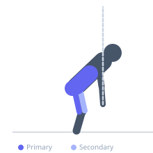
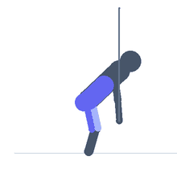

Exercise guide / Trap Bar Deadlift with Band Around Torso
Trap Bar Deadlift with Band Around Torso
A trap bar deadlift variation in which a resistance band is looped around the hips and anchored behind the lifter, creating a horizontal pulling force that challenges anti-flexion stability and hip hinge mechanics simultaneously. The band pulls the hips backward during the lift, forcing the lifter to actively resist the band by driving the hips forward through the top of the movement. This provides instant proprioceptive feedback for hip extension completion and is used in both strength training and deadlift technique correction.
Primary muscles
gluteus maximus
biceps femoris long head
erector spinae
Secondary muscles
rectus femoris
adductor magnus
Stabilizers
transverse abdominis
Equipment
Trap Bar (Hex Bar)
Resistance Band (Loop / Mini Band)


Starting position
- Loop a resistance band around the hips and anchor the other end to a fixed point behind the lifter at approximately hip height. Stand inside a trap bar loaded with weight. The band should provide meaningful horizontal tension when standing.
Setup
- The band anchor should be at or slightly above hip height. The band must be securely anchored to a power rack or similar fixed point. Use a trap bar for the reduced shoulder demand and more natural stance.
Steps
- Step 1: Step inside the trap bar and position the band around the hips, holding the tension from behind.
- Step 2: Hinge at the hip to reach the trap bar handles. Take a breath and brace.
- Step 3: Drive through the floor to lift the bar, simultaneously driving the hips forward against the band's resistance.
- Step 4: At lockout, fully extend the hips and push through the band tension. Lower under control.
Coaching cues
- Drive the hips through the band at the top — it should feel like you are pushing forward against resistance at lockout
- Feel the difference in glute activation at lockout compared to a standard trap bar deadlift
- The band teaches you to complete the hip extension — do not stop at 90% of the way up
Breathing
- Inhale and brace before the pull. Exhale forcefully at lockout as you drive the hips forward.
Range of motion
- Full deadlift range — floor to full hip extension against the band.
Tempo
- 2s pull, 1s lockout hold against band, 3s eccentric lower
Common mistakes
- Not fully extending the hips at lockout — the band should be maximally tensioned at the top
- Using a band anchor that is too low, creating a downward rather than horizontal pull
- Using a band that is too light to provide meaningful resistance at lockout
Safety
- Ensure the band anchor is completely secure before lifting
- If the band causes balance issues, reduce the bar weight until the movement pattern is stabilized
Training
- strength: 3–6 reps
- endurance: 5–8 reps
- strength: 3–4 sets
- endurance: 2–3 sets
- Rest: {'strength': 180, 'endurance': 90}